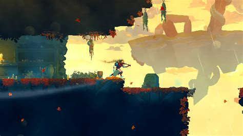

Dead Cells is a fast-paced action roguelike game. Players control a character known as the Prisoner, who must explore a dangerous island filled with enemies, traps and powerful bosses. The main objective is to fight through different environments, collect weapons and defeat enemies to progress. Each run is different because the levels are procedurally generated, making every playthrough unique. Players can use swords, bows, shields and special abilities to fight enemies. Dodging attacks and learning enemy patterns are important for survival. When players die, they lose most collected items but can unlock permanent upgrades to help with future runs. Overall, Dead Cells is a challenging game that rewards quick reactions, strategic thinking and learning from mistakes.
| Home Page | Items Page | Levels Page | Review Page |
|---|